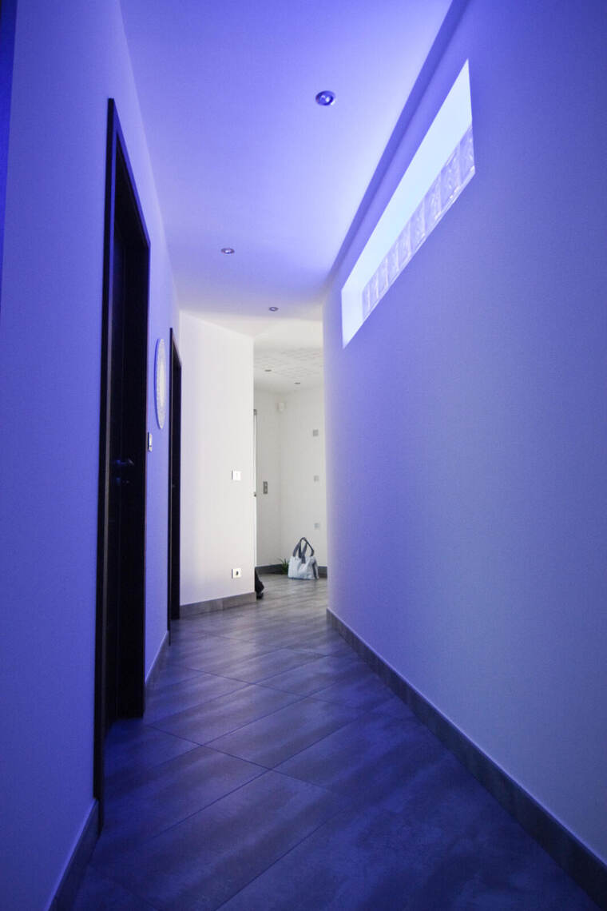
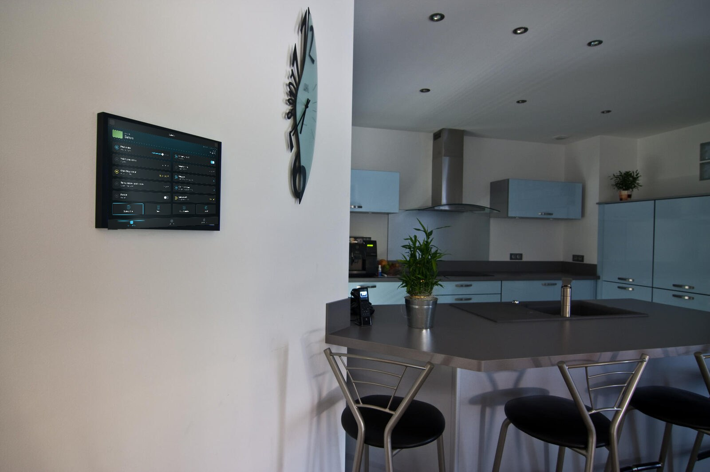
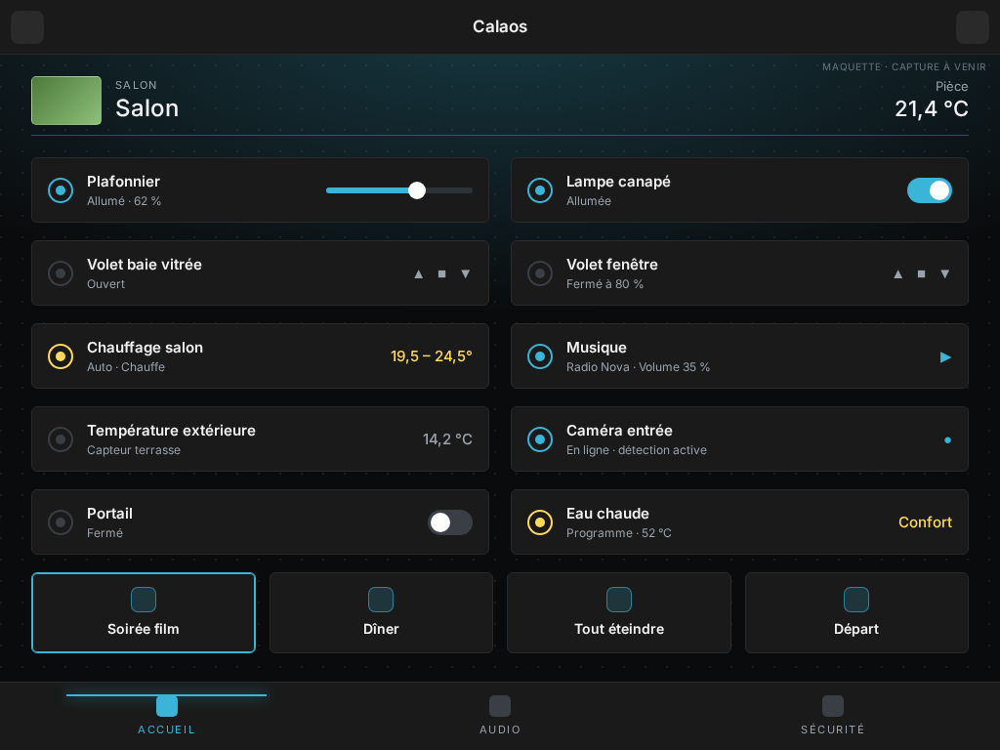
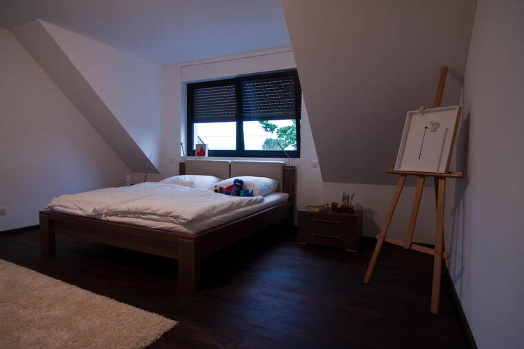
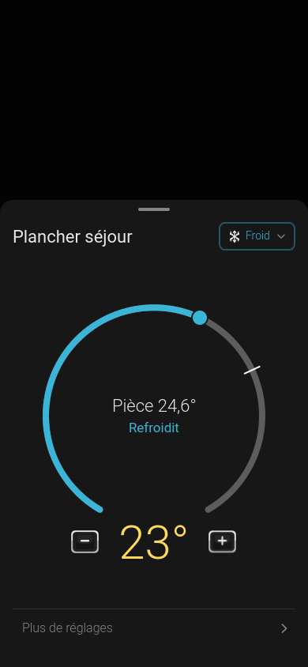
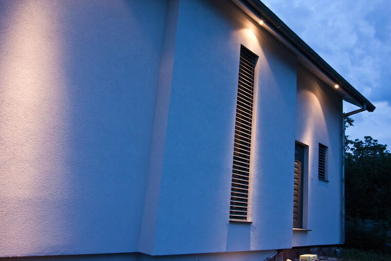
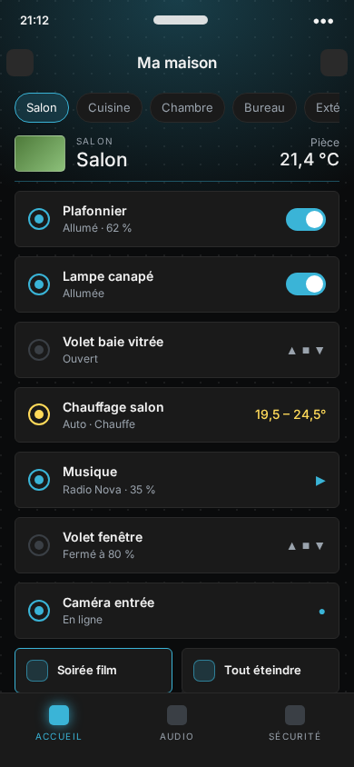
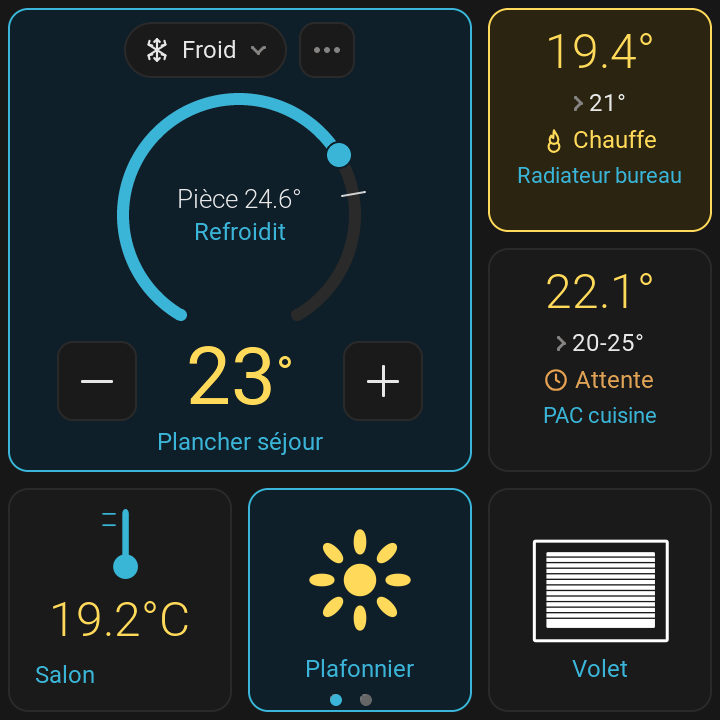
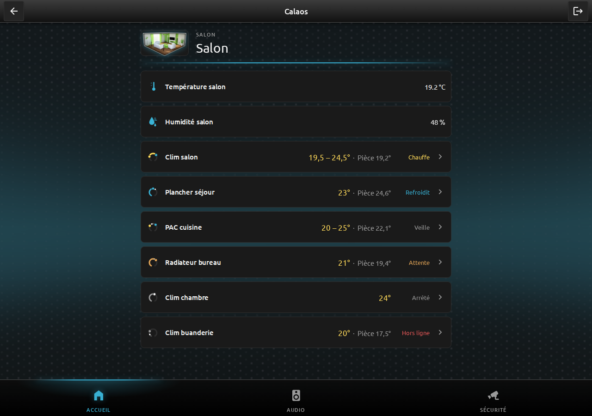

Lumières
Allumez, variez, groupez : une pièce, un étage ou toute la maison.
PiècesGroupesVariation

Pilotez lumières, volets, chauffage, musique et caméras depuis votre mobile, un écran tactile ou un panneau mural. Tout reste dans la maison : pas de cloud, pas d’abonnement.

Du matériel que vous avez déjà à une interface que toute la famille utilise.
Calaos parle aux automates, aux bus et aux objets que vous avez déjà, sans passer par un service externe.
Wago, KNX, Philips Hue, MQTT, ESPHome…Avec Calaos Installer, vous créez pièces, appareils et scénarios une fois, puis vous les envoyez à la maison.
Calaos Installer, sur ordinateurLe même réglage sur le mobile, le panneau mural, l’écran tactile et le navigateur.
Aussi par texte ou à la voix, via MCP
Allumez, variez, groupez : une pièce, un étage ou toute la maison.


Une consigne par pièce, des programmes horaires, la courbe de température.


Caméras en direct, détecteurs, alarme : les images restent chez vous.
Photos d’ambiance.
L’application mobile se connecte à votre serveur Calaos avec son adresse, votre identifiant et votre mot de passe. Elle donne accès aux pièces et à leurs équipements : lumières (variation et couleur), volets, prises, capteurs, régulation du climat. Vous lancez un scénario, regardez vos caméras et commandez les lecteurs audio. L’affichage suit en direct ce qui se passe dans la maison, et une notification push ouvre l’événement concerné. L’interface existe en français, en anglais et en allemand.

Le panneau mural est un écran tactile fixé au mur, qui fonctionne avec un firmware Calaos sur ESP32-P4. Il se branche en Ethernet ou en Wi-Fi, trouve le serveur sur le réseau et s’y associe avec un code court. Le serveur lui envoie ses pages : interrupteurs de lumière, température, scénarios, volets, climat, horloge et écran de veille. Un modèle de 720 × 720 intègre aussi deux relais. Le firmware se met à jour depuis le serveur, avec retour à la version précédente en cas d’échec.
Calaos Home existe aussi en version plein écran, pour un écran tactile fixe qui fait tourner Calaos OS. Elle reprend les fonctions de l’application mobile : pièces, scénarios, caméras et lecteurs audio, avec un clavier virtuel à l’écran. Vous pouvez y poser des widgets déplaçables, comme une horloge, une note ou la météo. Le réseau, la langue et les mises à jour du système se règlent depuis l’écran lui-même.

L’interface web est servie par le serveur Calaos lui-même : il suffit d’ouvrir son adresse dans un navigateur, sans rien installer. Elle présente les pièces et leurs équipements, les scénarios, les caméras et les lecteurs audio. L’affichage se met à jour en direct, sans recharger la page.
« Éteins tout en bas et mets 19 degrés dans la chambre. » Un assistant IA branché sur votre maison.
Quelques exemples parmi les protocoles et appareils pris en charge. La liste complète est dans la documentation.
Code sous licence GPLv3 : vous pouvez le lire, le modifier, l’héberger.
Tout fonctionne sans internet. Vos données restent dans la maison.
Des protocoles standards et un matériel que vous choisissez : rien ne dépend d’un fabricant.
Le projet est actif sur GitHub : versions publiques, correctifs, nouveautés.
Des utilisateurs et des contributeurs qui s’entraident sur Discord et GitHub.
Calaos tourne sur un mini PC x86_64. Vous préparez une clé, vous installez, vous décrivez votre maison.
Posez vos questions, montrez votre installation.
Rejoindre le DiscordCode, tickets et contributions, ouverts à tous.
github.com/calaosLe projet a besoin de votre temps comme de votre argent. Il n’y a pas de montant minimum : vous donnez ce que vous souhaitez.
Les dons servent à entretenir les serveurs et abonnements des services Calaos, à acheter du matériel pour le développement ou la prise en charge de nouveaux équipements, et à faire connaître le projet.
bc1qx7z5lq2hvmfzuveyuxwnzhq9gt4xsh0qa0zy6u